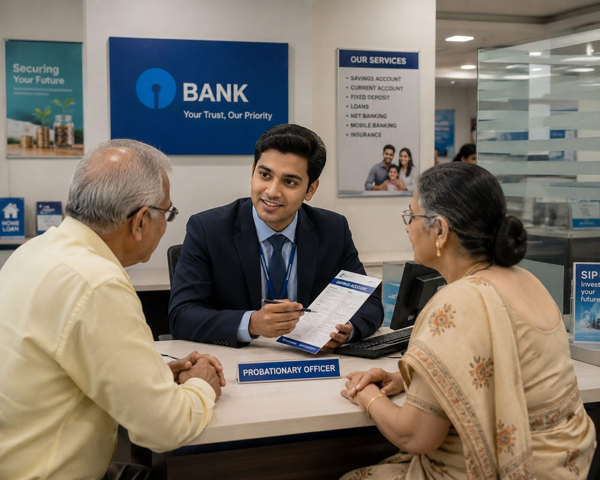

- When you go to a bank, you might see different people doing different types of work.
- A Probationary Officer (PO) is one of the officers working in the bank.
- They help customers with things like opening accounts, loans, and other banking services.
- They also check documents and make sure the work is done correctly.
- As they gain experience, they get more responsibilities.
- 👉 In simple words: A Probationary Officer is a bank officer who helps customers and handles different types of work in a bank.
Probationary Officer
👨💼 What Do They Do?

🎓 How to Become a Probationary Officer
- There is no single course to become a Probationary Officer(PO).
- First you need to complete a bachelor's degree (graduation).
- After graduation, you can enter the banking sector as a Probationary Officer by clearing the selection process.
- With experience and promotions, you can move into higher banking positions.
STEP 1
Pass Class 12 from any stream (Commerce, Science, or Arts).
STEP 2
Complete a bachelor's degree in any discipline
You can choose B.Com., BBA, B.A., B.Sc., B.Tech., or another recognised bachelor's degree.
STEP 3
Prepare for PO recruitment
After graduation, you can prepare for Probationary Officer recruitment in banks.
STEP 4
Choose your entry route
- Public Sector Banks
- Private Banks
- Regional Rural Banks
STEP 5
Public-sector banks usually recruit Probationary Officers through exams such as
SBI PO IBPS POSTEP 6
Private banks may recruit graduates through their own selection process, interviews, or training programmes.
STEP 8
Clear the selection process
Depending on the recruitment, you may need to clear examinations, interviews, and other required stages.
STEP 9
After successfully completing the selection process, you can join in a bank as a Probationary Officer.
STEP 1
Imagine you are working as a Probationary Officer in a bank.
STEP 2
You start your day by checking the work that needs to be done.
STEP 3
Customers come to the bank with different needs. You help them with accounts, loans, and other banking services.
STEP 4
You check documents and make sure the information is correct.
STEP 5
You may also help solve customer problems and handle other banking work given to you.
STEP 6
You work with other bank employees and learn how different parts of the bank work.
STEP 7
As you gain experience, you take on more responsibilities.
STEP 8
If you enjoy helping people, learning different types of work, and taking responsibility, this career may suit you.
Public Sector Banks
Work in government-owned banks.
Help customers and handle different banking work.
Private Sector Banks
Work in private banks.
Help customers and handle different banking work.
Regional Rural Banks
Work in Regional Rural Banks.
Serve people in rural and semi-urban areas.
(Click Yes or No for each question)
1. Do you enjoy helping people when they need assistance?
2. Do you enjoy talking to people and explaining things to them?
3. Are you interested in learning how banks, money, and loans work?
4. Imagine a customer comes to your bank to open a new account. You need to talk to them, check their documents, and help them complete the process. Would you enjoy doing this work?
5. Imagine a customer comes to your bank to apply for a loan. You need to check their documents, income, and other details before processing the loan. Would you enjoy doing this work?